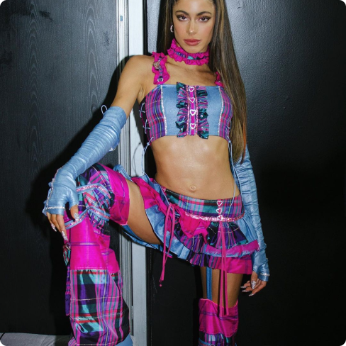

“Un 85% de la ropa se queda en los vertederos clandestinos del Desierto”
Y2K
El y2k forma parte del fast fashion. Al volver, hizo que muchas jóvenes empezaran a comprar ropa de mala calidad en grandes cantidades.
Está principalmente fomentado por influencers en Instagram o Tiktok.
Acá podes ver a algunas de ellas promoviendo el consumo, el cual, con tanta llegada, puede resultar peligroso.


Se caracteriza por:
Prendas de terciopelo como chandales, camperas y carteras;
El glitter, las lentejuelas, el gloss y brillos;

Accesorios de plástico como collares, brochas, lentes de sol, uñas, etc;
Prendas coloridas con distintos tipos de estampados.
CELEBRIDADES
Estos son los outfits de algunas famosas que forman parte de este furor.
Tini Stoessel con un outfit súper colorido y de cuerina
Las tinturas textiles forman parte de la contaminación marina y el cuero tiene un procesado muy tóxico
Paris Hilton y Kim Kardashian luciendo su nueva colección Velour
Estos chandales de terciopelo tardan 200 años en descomponerse
Olivia Rodrigo usando un tapado de pelo sintético
Hecho con derivados de petróleo y otros productos químicos
Emilia Mernes usando un corset y guantes de cuero sintético
El procesado del mismo es la fase más tóxica de su producción
Lisa usando ropa brillante y altamente pigmentada
Productos altamente contaminantes para nuestros oceános
Dua Lipa con un conjunto compuesto por una mariposa hecha de strass
El strass y el glitter suelen terminar en los mares y es ingerido por especies marinas
Rihanna usando un abrigo de peluche rosado
Una tela que entra en la categoría de contaminantes